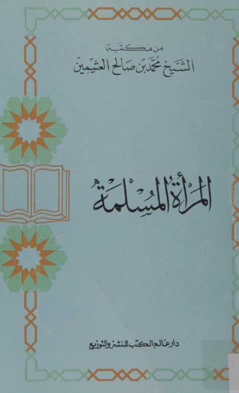

Downloads need an internet connection.
المرأة المسلمة
Authors: محمد بن صالح العثيمين
Publishers: دار عالم الكتب للطباعة والنشر والتوزيع
**▫️ العنوان: المرأة المسلمة** ▪️ المؤلف: #محمد_بن_صالح_العثيمين ▫️ الناشر: #دار_عالم_الكتب_للنشر_والتوزيع ▪️ تاريخ النشر: 1408- 1988 ▫️ بلد النشر: الرياض، #السعودية ▪️ الطبعة: 4 ▫️ عدد الأجزاء: 1 ▪️ الصفحات: 115 ▫️ نوع الوعاء: #كتاب ▪️ التصنيف الرئيسي: #المرأة_والمجتمع ▫️ التصنيف الفرعي: #المرأة_في_الإسلام ۪